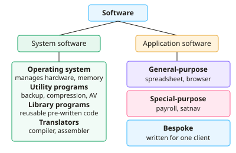

A-level Computer Science Year 12 · Topic 13
Systems software and translators
Systems software and translators is about the software that runs the computer and turns code into instructions.
We will classify software, and study how operating systems manage memory, interrupts and scheduling.
Then we compare types of operating system, utilities, drivers and virtual machines, and follow code through compilers, linkers and loaders.
- 7 subtopics
- 213 questions
- Free: 13.1 notes and 10 questions
In this topic
- 13.1Hardware and software classification: system, application, general-purpose, special-purpose and bespokeFree below · 31 questions
- 13.2Operating systems: memory management, paging, segmentation and virtual memoryOpen in Full Marks · 45 questions
- 13.3Interrupts and scheduling algorithmsOpen in Full Marks · 27 questions
- 13.4Types of operating system: embedded, real-time, multi-tasking, multi-user and distributedOpen in Full Marks · 25 questions
- 13.5Utility software, BIOS, device drivers and virtual machinesOpen in Full Marks · 27 questions
- 13.6Translators: compilers, interpreters, assemblers and stages of compilationOpen in Full Marks · 32 questions
- 13.7Libraries, linkers, loaders and open/closed source softwareOpen in Full Marks · 26 questions
13.1 · Free notes
Hardware and software classification: system, application, general-purpose, special-purpose and bespoke

Key points
- System software manages and controls the computer hardware and provides a platform for other software. It includes the operating system, utility programs, library programs and translators.
- Application software lets the user carry out a task they actually want done, such as writing a letter, editing a photo or playing a game. It runs on top of the system software.
- General-purpose software can be used for many different tasks (e.g. a word processor, spreadsheet or web browser). It is usually sold off-the-shelf to a mass market, so it is cheap and well tested but may not fit a specific need exactly.
- Special-purpose software is designed to do one particular job (e.g. payroll, satellite navigation, engine management or a washing-machine controller). It is not intended for general use.
- Bespoke (custom-written) software is developed specifically for one client or organisation to meet their exact requirements. It is more expensive, takes longer to develop and has fewer users to find bugs, but it fits the requirements and the company owns or controls it.
- Off-the-shelf software is quicker to obtain, cheaper (development cost is shared across many buyers) and well tested. It may include unwanted features, may lack needed ones, and support and updates are controlled by the vendor.
- Utility programs are system software that maintain or improve the computer. Examples are anti-virus, backup, disk defragmenter, file compression, disk formatter and encryption tools.
- Library programs are collections of pre-written, tested routines (e.g. DLLs) that can be linked into a program. They save development time and avoid reinventing common functions.
- Translators convert source code into machine code. An assembler translates assembly language, a compiler translates a whole high-level program into an executable, and an interpreter translates and executes one statement at a time.
- Hardware is the physical components. It is classified as input (keyboard), output (monitor), storage (SSD) or processing (CPU). Some devices are both, e.g. a touchscreen (input and output).
- Exam tip: classify software by what it is for, not what it is called. Always give a reason, such as 'written for one company, so it is bespoke'.
In more detail
- Worked classification: an operating system → system software; a word processor → general-purpose application; a booking system written for one hospital → bespoke; satnav software → special-purpose.
- Bespoke vs off-the-shelf: bespoke software fits exactly but is costly and slow to develop; off-the-shelf is cheaper, well tested and supported, but may not fit perfectly.
- Worked utilities: antivirus, backup and disk management tools are system software, because they maintain the computer.
- Hardware vs software: hardware is the physical parts you can touch; software is the programs and data that run on them.
Practice
Hardware and software classification: system, application, general-purpose, special-purpose and bespoke: 10 questions
Pick an answer to check it, or open the answer for the explanation.
1. Which of the following is an example of system software?
- Spreadsheet package
- Disk defragmenter
- Web browser
- Presentation software
Show answer
B: Disk defragmenter. A disk defragmenter is a utility program, which is system software that maintains the computer. The others are general-purpose application software.
2. A hospital pays a company to write an appointment system tailored to its own wards and staff. What type of software is this?
- Utility program
- Off-the-shelf software
- Bespoke software
- Library program
Show answer
C: Bespoke software. Software written specifically for one client's requirements is bespoke (custom-written). Off-the-shelf software is mass-produced for many users.
3. Which statement best describes general-purpose application software?
- It can be used for many different tasks
- It is written for one organisation only
- It translates source code
- It controls the hardware directly
Show answer
A: It can be used for many different tasks. General-purpose software, such as a spreadsheet, can be applied to many tasks. Bespoke software is for one client and system software manages hardware.
4. Which is a disadvantage of bespoke software compared with off-the-shelf software?
- It cannot be tailored to needs
- It usually costs more and takes longer to develop
- It has no support available
- It may contain unwanted features
Show answer
B: It usually costs more and takes longer to develop. Bespoke software needs analysis, design and testing for one client, so it costs more and takes longer. Its main advantage is that it fits needs exactly.
5. What is the main purpose of a file compression utility?
- To schedule processes
- To translate high-level code
- To reduce the size of files to save storage space
- To find and remove viruses
Show answer
C: To reduce the size of files to save storage space. Compression utilities encode files so they take up less storage or transmit faster. Virus removal is anti-virus and translation is done by a compiler.
6. A programmer links a pre-written set of sorting routines into a new program. What are these routines?
- A device driver
- An interpreter
- A utility program
- A library program
Show answer
D: A library program. Library programs are collections of tested, reusable routines (e.g. DLLs) that can be linked into other programs to save development time.
7. The software inside a washing machine that controls the wash cycle is best described as which type?
- General-purpose software
- Special-purpose software
- Off-the-shelf word processor
- A library program
Show answer
B: Special-purpose software. It performs one specific job and is not intended for general use, so it is special-purpose software.
8. Which of these is NOT a function of an operating system?
- Managing peripheral devices
- Managing files on storage
- Allocating memory to processes
- Editing the user's photographs
Show answer
D: Editing the user's photographs. Photo editing is an application task. The OS manages memory, files, devices, processes, security and the user interface.
9. A small firm wants accounting software quickly and cheaply, with no unusual requirements. Which is the most suitable choice?
- Bespoke software
- Off-the-shelf software
- A new compiler
- An assembler
Show answer
B: Off-the-shelf software. Off-the-shelf packages are available immediately and cheap because development costs are shared. Bespoke is only worth it for unusual needs.
10. A touchscreen on a tablet is correctly classified as which type of hardware?
- Processing device
- Storage device only
- Input and output device
- Output device only
Show answer
C: Input and output device. A touchscreen displays information (output) and detects touch (input), so it is both an input and an output device.
Keep going in Full Marks
Full Marks has 31 questions on Hardware and software classification: system, application, general-purpose, special-purpose and bespoke (21 more than here), set out in practice levels. You also get notes and 3D models for all 7 subtopics of Systems software and translators, plus games, timed exams and past papers.